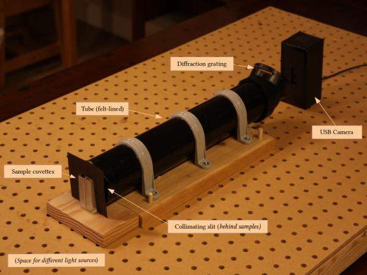
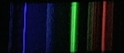
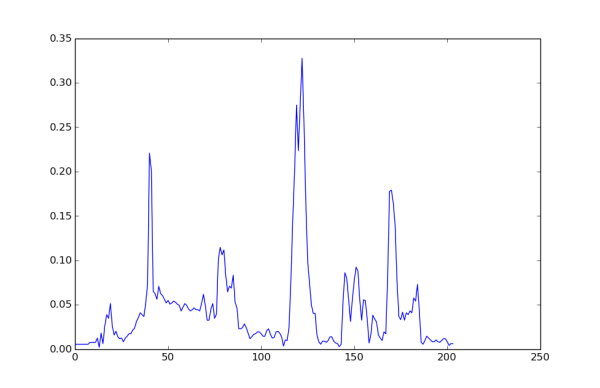

DIY Spectrophotometer
There was some interest at the Maker Faire for detailed instructions on how to build the spectrometer. We are working on writing them up, and we will post them here when ready.
If you have an unknown liquid, looking at its spectrum can help you identify what it might contain. So we built a spectrophotometer, using a webcam and inexpensive hardware-store pieces, to read the spectrum of a sample into a computer where it can be analyzed.
This allows individuals to do such things as:
- Detecting of crude and other oil-based contaminants in water samples
- Presence of pollutants such as pesticides and other chemicals
- Analysis of food and beverages
Background
The light all around us can be resolved into oscillations of the electromagnetic field at different characteristic wavelengths. If a broad range of wavelengths are present in similar proportion we perceive this as white light. In the visible range of wavelengths, if light intensity is concentrated at specific wavelengths we see distinct colors.
A measurement of light intensity across a range of frequencies is known as a spectrum. Spectra contain information determined by the nature of the light source and the nature of the medium through which light passes. Substances through which light is transmitted — such as a sample containing water and one or more substances — do not pass all frequencies equally. Depending on the substances present, more or less light at any given frequency will be absorbed by the sample. By imaging the absorption at each frequency (relative to some reference, such as pure water), the unique signature or various substances can be found.
The Spectrophotometer
Here is the design of our photospectrometer:

The core of the system is a bench-top assembly upon which the spectrometer components are staged. The spectrometer itself sits on a peg board bench that facilitates fixing components relative to one another. A light source enters the spectrometer through a narrow (“collimating”) slit and the light rays propagate down the tube. The tube is lined with black felt which avoids secondary reflectons reaching the imaging system and interfering with the spectral image.
At the exit end of the tube, the light that has entered from the slit encounters a diffraction grating placed at an angle (22.5 degrees in our design). The grating has the effect of diffracting light of different wavelengths to different angles (acting effectively like a prism). The image that results is is a broadening of the thin-line slit image into a banded image, with colors of different frequencies expressed at different intensities depending on the source and sample properties. In our design the image is captured by a consumer USB-connected “web” camera, where it is then analyzed by software we have written.
The software allows the user to semi-automatically calibrate the physical set-up using the (known) spectrum of a fluorescent light bulb. Once this is done, spectra can be captured and plotted, and compared to each other, through a web interface.
The Spectra
In order to be able to identify an unknown spectrum, we need to calibrate our spectrometer. We can do this using a known, strongly peaked light source, such as a fluorescent light. Since we know what the spectrum of this source should be, we can identify the peaks in our spectrum, and match them to the known wavelengths of those peaks, in order to determine the corresponding wavelengths to the horizontal points on our spectra.
Here is the raw spectrum of a fluorescent light obtained from our spectrophotometer:

And here's what the spectra looks like if you look at the intensities at different wavelengths:

Absorption spectra produced by various samples can be seen in the Spectrum Gallery.
Other Resources
The design we are currently working takes inspiration from designs discussed at Public Labs as well as a design described by sci-toys. Public Labs has been working on a DIY Spectrometer project with a similar motivation; they have a lot of other very interesting DIY projects as well. They have kits available for purchase for people who don't want to start from scratch, including portable versions. Another useful source is sci-toys, which also offers some useful supplies.